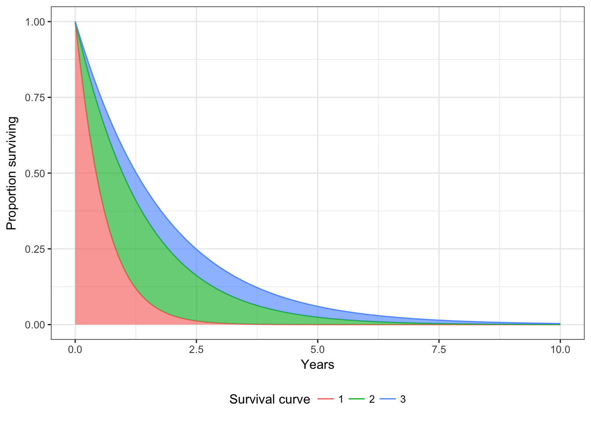

Partitioned survival models
Devin Incerti
2018-05-20
Overview
An N-state partitioned survival model (PSM) simulates the probability that a patient is in each of N distinct health states at a given point of time when treated by a particular therapy. State membership is estimated from a set of non-mutually exclusive survival curves; for an N-state model, N-1 survival curves are required.
The cummulative survival function, \(S(t)_n\), represents the probability that a patient survives to health state \(n\) or to a lower indexed state beyond time \(t\). The probability that a patient is in health state 1 is always just \(S(t)_1\). State membership in health states \(2,\ldots, n-1\) is calculated as \(S(t)_{n} - S(t)_{n-1}\). Finally, the probability of being in the final health state \(n\) (i.e., the dead state) is \(1-S(t)_{n-1}\), or one minus the overall survival curve.
In hesim, an N-state PSM consists of three types of separate statistical models: a set of N-1 survival models, a model of the utility values to assign to each health state, and a set of models for costs to assign to each health state. Multiple cost models can be used to categorize groups into different categories (e.g., costs of medical care, drug costs). All models can either be fit using R or constructed with external data.
An example 4-state PSM
To illustrate a partitioned survival analysis, consider the evaluation of a two-line sequential treatment strategy in oncology using a 4-state PSM. The 4 health states might be:
- Progression free on first line treatment
- Progression free on second line treatment
- Progressed on second line treatment
- Death
Below we conduct an example analysis using this setup.
Parameter estimation
The first step in any health-economic simulation is to estimate the model parameters. Since analyses in hesim are, by default, based on sampled values of the parameters in order to facilitate probabilistic sensitivity analysis (PSA), it is a good idea to determine the number of sampled parameter sets that are desired.
n.samples <- 100Survival models
The parameters of the survival models would typically be estimated in one of two ways. First, if access to patient level data from a clinical trial were available, survival models would be fit using available R packages. Second, a formal evidence synthesis—such as a network meta-analysis—might be conducted. Here, we provide an example of an analysis with trial level data.
We consider a dataset with three survival endpoints with endpoint 1 denoting the lowest indexed state, endpoint 2 the next indexed state, and endpoint 3 representing overall survival. In our example, endpoint 1 represents progression on 1st line treatment, endpoint 2 represents progression on 2nd line treatment, and endpoint 3 represents death.
Survival models in hesim can be fit using either flexsurvreg or flexsurvspline from the flexsurv package. hesim currently supports parametric (exponential, Weibull, Gompertz, gamma, log-logistic, lognormal, and generalized gamma) and spline survival models. In this example, we fit a Weibull model to each of the three survival endpoints. We then create an object of class partsurvfit, which stores the fitted survival models along with the data using for the fitting.
library("hesim")
library("flexsurv")
surv.dataset <- part_surv4_simdata$survival
fit1 <- flexsurv::flexsurvreg(Surv(endpoint1_time, endpoint1_status) ~ age + female +
factor(strategy_id),
data = surv.dataset,
dist = "weibull")
fit2 <- flexsurv::flexsurvreg(Surv(endpoint2_time, endpoint2_status) ~ age + female +
factor(strategy_id),
data = surv.dataset,
dist = "weibull")
fit3 <- flexsurv::flexsurvreg(Surv(endpoint3_time, endpoint3_status) ~ age + female +
factor(strategy_id),
data = surv.dataset,
dist = "weibull")
part.surv.fits <- partsurvfit(flexsurvreg_list(fit1, fit2, fit3),
data = surv.dataset)Cost models
Currently, hesim supports parameterizing a cost or utility model using linear models. For instance, we can fit a model for medical costs as a function of the three non-death health states using the lm() function in R.
costs.medical.fit <- stats::lm(costs ~ female + state_name, data = part_surv4_simdata$costs$medical)We can also use a linear model to predict drug costs that only vary by treatment strategy. In this case, a linear model parameter object (i.e., an object of class params_lm) can be created directly with the params_lm() function. The linear model has no intercept (meaning that we specify the costs for strategy 1, strategy 2, and strategy 3) and cost values are constant across samples in the PSA.
drug.costs.mat <- matrix(rep(part_surv4_simdata$costs$drugs$costs, n.samples),
nrow = n.samples, byrow = TRUE)
drugcosts.params <- params_lm(coefs = drug.costs.mat)Utility model
We can create a utility model in similar fashion to the drug cost model. Suppose that a study from the literature suggests that utility ranges from .8 to .9 in state 1, .7 to .8 in state 2, and .6 to .7 in state 3. Then we might sample utility in each state using a uniform distribution (although the beta distribution would likely be more appropriate for sampling utility scores).
utility1 <- runif(n.samples, .8, .9)
utility2 <- runif(n.samples, .7, .8)
utility3 <- runif(n.samples, .6, .7)
utility.params <- params_lm(coefs = cbind(utility1, utility2, utility3))Forming a model structure
A PSM in hesim is an R6 object of class PartSurv and comprises of three separate submodels: (1) a set of survival models for generating survival curves (of class PartSurvCurves), (2) a utility model (of class PartSurvStateVals), and (3) a set of cost models for each cost component (a list of PartSurvStateVals objects).
Simulation data
The input data required to simulate decision models in hesim can be set up in 3 steps as described in our introduction to hesim. First, the data can be set up as a collection of data frames or data tables. A 4-state PSM consists of three types of data tables: a table describing treatment strategies, the patient population of interest, and four health states (death and three non-death states). In this example, we model three treatment strategies and three distinct patients that differ in age and gender. Relevant tables are combined using hesim_data(), which creates a general object of class hesim_data for storing data tables for simulation modeling in hesim.
library("hesim")
library("data.table")
set.seed(101)
dt.strategies <- data.table(strategy_id = c(1, 2, 3))
dt.patients <- data.table(patient_id = seq(1, 3),
age = c(45, 50, 60),
female = c(0, 0, 1))
dt.states <- data.frame(state_id = seq(1, 3),
state_name = c("Progression free (1st line)",
"Progression free (2nd line)",
"Progressed (2nd line)"),
stringsAsFactors = FALSE)
hesim.dat <- hesim_data(strategies = dt.strategies,
patients = dt.patients,
states = dt.states)
print(hesim.dat)## $strategies
## strategy_id
## 1: 1
## 2: 2
## 3: 3
##
## $patients
## patient_id age female
## 1: 1 45 0
## 2: 2 50 0
## 3: 3 60 1
##
## $states
## state_id state_name
## 1 1 Progression free (1st line)
## 2 2 Progression free (2nd line)
## 3 3 Progressed (2nd line)
##
## attr(,"class")
## [1] "hesim_data"Second, we can use expand_hesim_data() to “expand” the hesim_data object into single “long” dataset of class “expanded_hesim_data” suitable for predictive modeling. To model survival curves, we require a dataset in which each observation is a unique treatment strategy and patient, while each observation in the utility and cost models must be a unique treatment strategy, patient, and health state.
survs.edata <- expand_hesim_data(hesim.dat, by = c("strategies", "patients"))
statevals.edata <- expand_hesim_data(hesim.dat, by = c("strategies", "patients", "states"))Third, for a given statistical model, we extract the relevant covariates and id variables from an “expanded_hesim_data” object to construct input matrices and row indices for prediction. We illustrate this third step when creating the survival, utility, and cost models below.
Survival models
Since we fit our survival models using flexsurvreg, we can create a PartSurvCurves object using form_PartSurvCurves(), which generates both the input data and samples of the model parameters needed for prediction.
The model parameters can be sampled in one of two ways. First, the parameters of each survival model can be sampled separately using a multivariate normal distribution. However, this option does not preserve the correlation in the survival endpoints. By default, form_PartSurvCurves() consequently samples the parameters via bootstrapping, whereby the survival models are refit repeatedly to resamples of the data element in a partsurvfit object.
part.surv.curves <- form_PartSurvCurves(part.surv.fits, data = survs.edata, n = n.samples,
bootstrap = TRUE)Creating cost and utility models
We fit a linear model to medical costs, so we can use the form_PartSurvStateVals() to instantiate a PartSurvStateVals object for medical costs.
part.surv.medcosts <- form_PartSurvStateVals(costs.medical.fit, data = statevals.edata, n = n.samples)Drug costs were not fit with a model in R, so we cannot instantiate a model for drug costs using form_PartSurvStateVals(). Instead, we create the model from our params_lm class object and input data (of class input_data). Since we don’t have fitted R model, we can use a formula object to specify the explanatory variables in the model. That is, we use formula() to obtain the variables (strategy_id) in statevals.edata that are needed.
input.dat <- form_input_data(formula(~ -1 + factor(state_id)), data = statevals.edata)
part.surv.drugcosts <- PartSurvStateVals$new(data = input.dat, params = drugcosts.params)We can instantiate a utility model in the same manner.
input.dat <- form_input_data(formula(~ -1 + factor(state_id)), data = statevals.edata)
part.surv.utility <- PartSurvStateVals$new(data = input.dat, params = utility.params)Simulating outcomes
Simulating survival curves
Survival curves are predicted by treatment strategy and patient with the function $sim_survival(). The predicted curves are returned as a tidy data.table to facilitate plotting and stored as a field in the class named survival_. Below we plot the mean survival curve for patient 2 with treatment strategy 3.
# Simulate
times <- seq(0, 10, by = .1)
part.surv$sim_survival(t = times)
# Plot
library("ggplot2")
surv.means <- part.surv$survival_[, .(mean_surv = mean(survival)),
by = c("curve", "strategy_id", "patient_id", "t")]
theme_set(theme_bw())
p.data <- surv.means[strategy_id == 3 & patient_id == 2]
p.data[, curve := factor(curve)]
p.data[, mean_surv_min := c(rep(0, length(times)), p.data[curve !=3, mean_surv])]
ggplot(p.data, aes(x = t, y = mean_surv, fill = curve)) +
geom_line(aes(col = curve)) +
geom_ribbon(aes(ymin = mean_surv_min, ymax = mean_surv), alpha = .65) +
xlab("Years") + ylab("Proportion surviving") +
scale_color_discrete(name = "Survival curve") +
guides(fill = FALSE) +
theme(legend.position = "bottom")
Simulating health state probabilities
After simulating survival, we can calculte the probability of being in each of the four health states using $sim_stateprobs(). At a given point in time, the probability of being in state 1 is the survival probabiility from the first survival curve, the probability of being in state 2 is the difference in survival probabilities between the 2nd and 1st curves, the probability of being in state 3 is the difference in survival probabilities between the 3rd and 2nd curves, and the probability of death is 1 minus the survival probability from curve 3. We plot these state probabilities for the first patient with the 30th randomly sampled parameter set.
# Simulate
part.surv$sim_stateprobs()
# Plot
stateprobs <- part.surv$stateprobs_[sample == 30 & patient_id == 1]
stateprobs[, state := factor(state_id,
levels = rev(unique(state_id)))]
stateprobs[, strategy := factor(strategy_id, labels = c("Strategy 1", "Strategy 2",
"Strategy 3"))]
ggplot(stateprobs[strategy_id %in% c(1, 2)],
aes(x = t, y = prob, fill = state, group = state)) +
geom_area(alpha = .65) + facet_wrap(~strategy) +
xlab("Years") + ylab("Proportion in state") +
scale_fill_manual(name = "Health state",
values = c("gray92", "green4", "orange", "purple"),
labels = c("Death",
rev(hesim.dat$states$state_name))) +
guides(fill = guide_legend(reverse = TRUE)) +
theme(legend.position = "bottom")
Simulating costs and QALYs
Finally, we can simulate discounted costs and QALYs by numerically integrating the “weighted” probabilities in $stateprobs_, where weights are a function of the discount factor and the predicted state values (for more details see the PartSurv reference page). Costs and QALYs are produced for each treatment strategy, patient, health state, and sampled parameter set.
# Costs
part.surv$sim_costs(dr = .03)
head(part.surv$costs_)## state_id sample strategy_id patient_id dr type costs
## 1: 1 1 1 1 0.03 medical 14645.53
## 2: 1 1 1 2 0.03 medical 14042.46
## 3: 1 1 1 3 0.03 medical 16085.43
## 4: 1 1 2 1 0.03 medical 15118.51
## 5: 1 1 2 2 0.03 medical 14496.07
## 6: 1 1 2 3 0.03 medical 16604.82# QALYs
part.surv$sim_qalys(dr = .03)
head(part.surv$qalys_)## state_id sample strategy_id patient_id dr type qalys
## 1: 1 1 1 1 0.03 qalys 0.4483503
## 2: 1 1 1 2 0.03 qalys 0.4298880
## 3: 1 1 1 3 0.03 qalys 0.4581769
## 4: 1 1 2 1 0.03 qalys 0.4628296
## 5: 1 1 2 2 0.03 qalys 0.4437748
## 6: 1 1 2 3 0.03 qalys 0.4729712